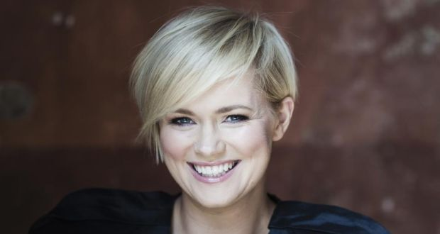

| Date: 11/11/2019 |
|  |
|---|
Amanda: Your first novel, P.S. I Love You, was a bestseller all over the world and got made into a movie. Do you feel that sudden fame made your career harder? Also, I've read that you wrote P.S. I Love You when you were 21 years old and working as a journalist. What was your motivation to change from journalism to being a novelist? Cecelia Ahern: I received a degree in Journalism and Media Communications. It was a broad communications course where we studied TV production, radio broadcasting, film studies, creative writing, and print journalism. I was drawn to this because I liked storytelling but always knew that print journalism was not where I wanted to go. My passion lay in fiction. When I completed my degree, my plan was to study for a master's in film production, but I left after two days to write P.S. I Love You. I hibernated for three months and lived and breathed every word of that book. It took over my life, I poured my heart and soul into it, and wrote the story for myself, not with the aim of being published. With the encouragement of my mom, I sent a few chapters to an agent, seeking advice, and I received so much more: my first two-book deal. It was an incredible moment in my life, and my life changed from being a student living at home to having a career and traveling the world. The belief in me gave me the encouragement to keep writing. I embraced the enormous opportunity offered to me. Cynthia: What are your rituals just before you start writing a new book? What would you recommend to anyone who wants to start writing but is not sure how to begin? CA: I think about the book for a long time before writing, I research the subject to fully understand it, immerse myself in it. I plot out the story in my head, watch it as though watching a movie in my head. I write out the main points, and when the character's voice is strong and I can hear them and feel them, truly understand them, then I start to write. I light a candle and write longhand. My advice is to not procrastinate, write what moves you, write with the voice you hear in your mind, and you will immediately be different, unique because nobody thinks like you, sounds like you, or will write like you. Kabriya: What was the biggest difference or challenge you found writing a YA book compared with the adult books you've written before? CA: There was no difference in writing it. I simply got into Celestine's head and saw the world from her eyes. My previous novel, I was in the mind of a 60-year-old man, so that's just part of being a writer, having the ability to see the world from different angles. The challenge was that it was a series, and I've never done that before, trying to decide what to reveal, what to hold back, all the threads to weave and seeds to sow for Perfect (the second book in the series). In the first draft of Flawed, I held back too much, feeling I should save story for Perfect, but then I went back and fleshed it out and made it meatier! Perfect grew so much more as a result. |